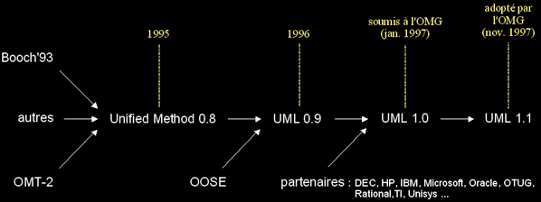

|
|
|
q
Méthodes ?
- Les premières méthodes d'analyse (années 70)
- Découpe cartésienne (fonctionnelle et hiérarchique) d'un système.
- L'approche systémique (années 80)
- Modélisation des données + modélisation des traitements (Merise, Axial, IE...).
- L'émergence des méthodes objet (1990-1995)
- Prise de conscience de l'importance d'une méthode spécifiquement objet :
comment structurer un système sans centrer l'analyse uniquement sur les données ou uniquement sur les traitements (mais sur les deux) ?- Plus de 50 méthodes objet sont apparues durant cette période (Booch, Classe-Relation, Fusion, HOOD, OMT, OOA, OOD, OOM, OOSE...) !
- Aucun méthode ne s'est réellement imposée.
- Les premiers consensus (1995)
- OMT (James Rumbaugh) : vues statiques, dynamiques et fonctionnelles d'un système
- Issue du centre de R&D de General Electric.
- Notation graphique riche et lisible.
- OOD (Grady Booch) : vues logiques et physiques du système
- Définie pour le DOD, afin de rationaliser de développement d'applications ADA, puis C++.
- Ne couvre pas la phase d'analyse dans ses 1ères versions (préconise SADT).
- Introduit le concept de package (élément d'organisation des modèles).
- OOSE (Ivar Jacobson) : couvre tout le cycle de développement
- Issue d'un centre de développement d'Ericsson, en Suède.
- La méthodologie repose sur l'analyse des besoins des utilisateurs.
- L'unification et la normalisation des méthodes (1995-1997)
- UML (Unified Modeling Langage), la fusion et synthèse des méthodes dominantes :

- UML aujourd'hui : un standard incontournable
- UML est le résultat d'un large consensus (industriels, méthodologistes...).
- UML est le fruit d'un travail d'experts reconnus.
- UML est issu du terrain.
- UML est riche (il couvre toutes les phases d'un cycle de développement).
- UML est ouvert (il est indépendant du domaine d'application et des langages d'implémentation).
- Après l'unification et la standardisation, bientôt l'industrialisation d'UML :
les outils qui supportent UML se multiplient (GDPro, ObjectTeam, Objecteering, OpenTool, Rational Rose, Rhapsody, STP, Visio, Visual Modeler, WithClass...).- XMI (format d'échange standard de modèles UML).
- UML évolue mais reste stable !
- L'OMG RTF (nombreux acteurs industriels) centralise et normalise les évolutions d'UML au niveau international.
- Les groupes d'utilisateurs UML favorisent le partage des expériences.
- De version en version, UML gagne en maturité et précision, tout en restant stable.
- UML inclut des mécanismes standards d'auto-extension.
- La description du métamodèle d'UML est standardisée (OMG-MOF).
>>> UML n'est pas une mode, c'est un investissement fiable !
q A quoi sert UML ?
- UML n'est pas une méthode ou un processus !
- Si l'on parle de méthode objet pour UML, c'est par abus de langage !
- Ce constat vaut aussi pour OMT ou d'autres techniques / langages de modélisation.
- Une méthode propose aussi un processus, qui régit notamment l'enchaînement des activités de production d'une entreprise.
- UML a été pensé pour permettre de modéliser les activités de l'entreprise, pas pour les régir (ce n'est pas CMM ou SPICE).
- Un processus de développement logiciel universel est une utopie :
- Impossible de prendre en compte toutes les organisations et cultures d'entreprises.
- Un processus est adapté (donc très lié) au domaine d'activité de l'entreprise.
- Même si un processus constitue un cadre général, il faut l'adapter de manière précise au contexte de l'entreprise.
- UML est un langage pseudo-formel
- UML est fondé sur un métamodèle, qui définit :
- les éléments de modélisation (les concepts manipulés par le langage),
- la sémantique de ces éléments (leur définition et le sens de leur utilisation).
- Un métamodèle est une description très formelle de tous les concepts d'un langage. Il limite les ambiguïtés et encourage la construction d'outils.
- Le métamodèle d'UML permet de classer les concepts du langage (selon leur niveau d'abstraction ou domaine d'application) et expose sa structure.
- Le métamodèle UML est lui-même décrit par un méta-métamodèle (OMG-MOF).
- UML propose aussi une notation, qui permet de représenter graphiquement les éléments de modélisation du métamodèle.
- Cette notation graphique est le support du langage UML.
- UML cadre l'analyse objet, en offrant :
- différentes vues (perspectives) complémentaires d'un système, qui guident l'utilisation des concept objets,
- plusieurs niveaux d'abstraction, qui permettent de mieux contrôler la complexité dans l'expression des solutions objets.
- UML est un support de communication
- Sa notation graphique permet d'exprimer visuellement une solution objet.
- L'aspect formel de sa notation limite les ambiguïtés et les incompréhensions.
- Son aspect visuel facilite la comparaison et l'évaluation de solutions.
- Son indépendance (par rapport aux langages d'implémentation, domaine d'application, processus...) en font un langage universel.
q Les points forts d'UML
- UML est un langage formel et normalisé
- gain de précision
- gage de stabilité
- encourage l'utilisation d'outils
- UML est un support de communication performant
- Il cadre l'analyse.
- Il facilite la compréhension de représentations abstraites complexes.
- Son caractère polyvalent et sa souplesse en font un langage universel.
q Les points faibles d'UML
- La mise en pratique d'UML nécessite un apprentissage et passe par une période d'adaptation.
Même si l'Espéranto est une utopie, la nécessité de s'accorder sur des modes d'expression communs est vitale en informatique. UML n 'est pas à l'origine des concepts objets, mais en constitue une étape majeure, car il unifie les différentes approches et en donne une définition plus formelle.
- Le processus (non couvert par UML) est une autre clé de la réussite d'un projet.
Or, l'intégration d'UML dans un processus n'est pas triviale et améliorer un processus est un tâche complexe et longue.
Les auteurs d'UML sont tout à fait conscients de l'importance du processus, mais l'acceptabilité industrielle de la modélisation objet passe d'abord par la disponibilité d'un langage d'analyse objet performant et standard.
|
|
|